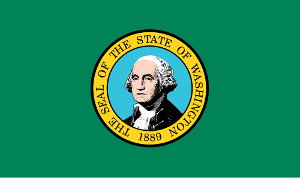

Washington, D.C.
Washington" can refer to George Washington, the first U.S. President, or the state of Washington in the Pacific Northwest, known for its natural scenery and cities like Seattle. George Washington was also the commander of the Continental Army and presided over the convention that drafted the U.S. Constitution. The state of Washington offers a diverse range of environments, from bustling urban areas to calmer rural communities.

FUN FACT!
Washington is the only state named after a U.S. president, George Washington, and is home to the world's largest manufacturing facility (Boeing) and the first Starbucks. It is also the only state with a green flag and the birthplace of pickleball, Father's Day, and the bread clip.
Places To Visit in Washington, D.C.
Wing Luke Museum
Seattle Art Museum
Chihuly Garden and Glas
Culture of Washington D.C
Media
Washington can refer to a variety of outlets, but most commonly refers to media organizations based in or focusing on Washington, D.C., such as The Washington Post and The Washington Times. These outlets cover national news, politics, and local events in the capital city. Other media includes cable news channels like C-SPAN, which provides live coverage of government, and local media in the state of Washington.
Etymology
Washington was named after President George Washington by an act of the United States Congress during the creation of Washington Territory in 1853; the territory was originally to be named "Columbia", for the Columbia River and the Columbia District, but Kentucky representative Richard H. Stanton found the name too similar to the District of Columbia (the national capital, itself containing the city of Washington), and proposed naming the new territory after President Washington.[17][18][19] Thus, Washington is the only U.S. state named after a president.
Geography
Washington is the northwesternmost state of the contiguous United States. It borders Idaho to the east, bounded mostly by the meridian running north from the confluence of the Snake River and Clearwater River (about 117°02'23" west), except for the southernmost section where the border follows the Snake River. Oregon is to the south, with the Columbia River forming the western part and the 46th parallel forming the eastern part of the Oregon Washington border. During Washington's partition from Oregon, the original plan for the border followed the Columbia River east until the confluence with the Snake, and then would have followed the Snake River east; this was changed to keep Walla Walla's fertile farmland in Washington.